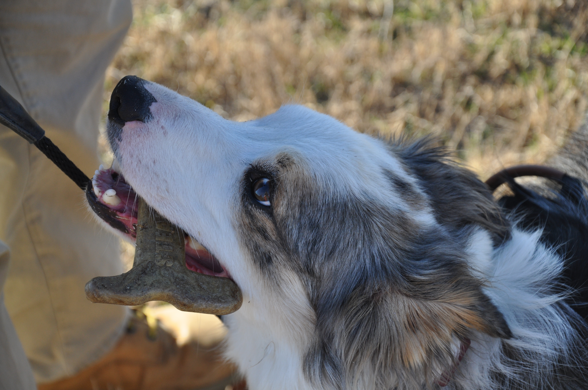

SteakyBone
Injection-molded consumer product developed from concept through tooling, production, documentation, and sales.
Injection MoldingProduct DevelopmentView project →

WoofWatch
Anti-theft smart dog collar combining custom electronics, PCB design, embedded systems, and enclosure development.
PCB DesignEmbedded SystemsView project →
Photo coming later
Injection Molding Machine
Custom-built machine expanded for greater shot capacity and multi-zone temperature control.
ManufacturingPID ControlView project →
Drone photo coming later
Hexacopter / Jetson Vision Drone
680 mm hexacopter integrating Pixhawk 6, Jetson Orin Nano, RealSense depth sensing, and experimental computer vision.
PixhawkJetson Orin NanoOpenCVView project →

Fallout Power Fist
Pneumatic wearable mechanism inspired by Fallout, built through repeated fabrication and redesign.
PneumaticsWelding3D PrintingView project →
Photo coming later
Flamethrower
A personal fabrication project inspired by the Boring Company Not-a-Flamethrower.
FabricationPrototypingView project →